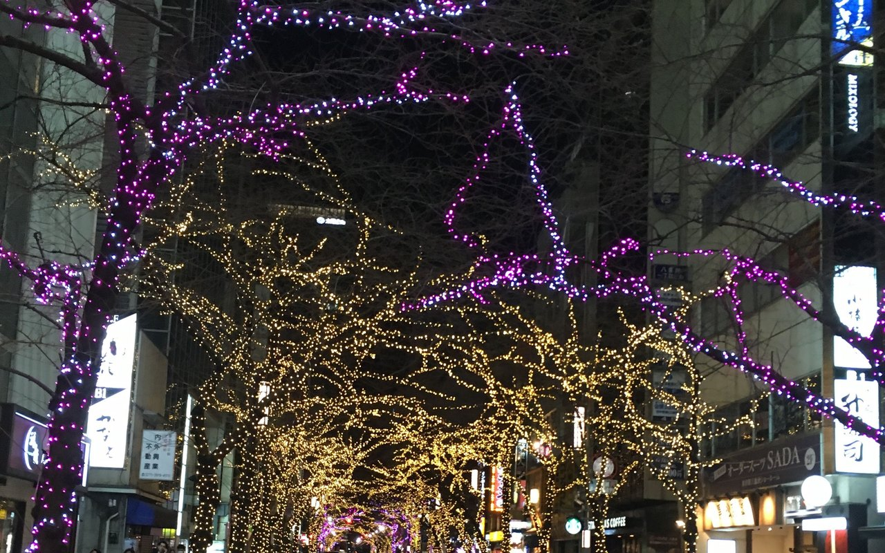

ROUTE A
Akihabara in Depth
One district, read deeply — how a black market became Electric Town, then the otaku capital.

- Kanda Myojin at dusk — the shrine on the hill
- Back streets down into the town
- Under the tracks — the parts maze
- Chuo-dori as the neon peaks
- Radio Kaikan and the night streets
- Dinner in the food lanes
The shrine. Founded in 730, moved to this hill in 1616 to guard Edo Castle — it still watches over the neighbourhood, and now blesses laptops too.
The birth of Electric Town. Postwar radio-parts stalls, moved under the arches in 1949. The maze still trades.
Neon at its peak. One street, three eras: appliances, computers, then anime and games.
Best for: a first evening in Akihabara, and anime or game fans who want the story behind the shops.